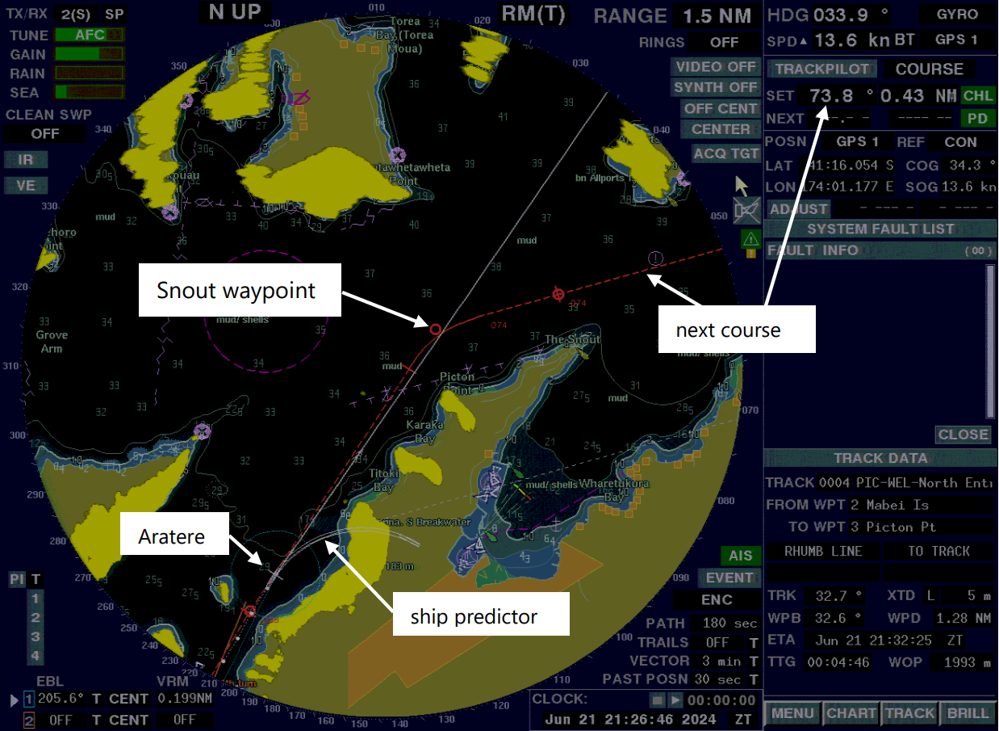
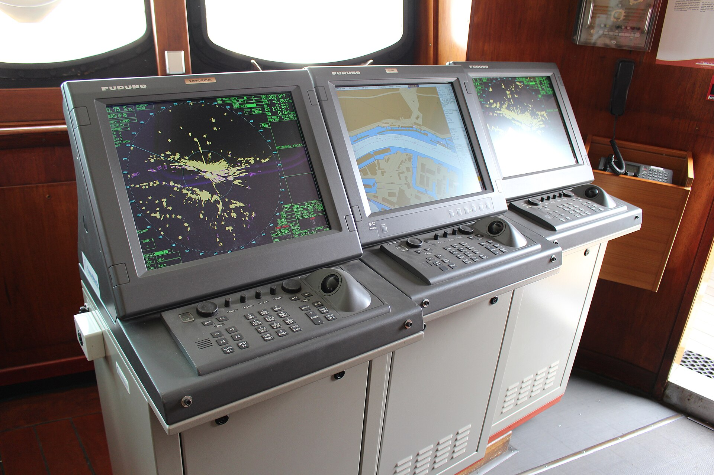
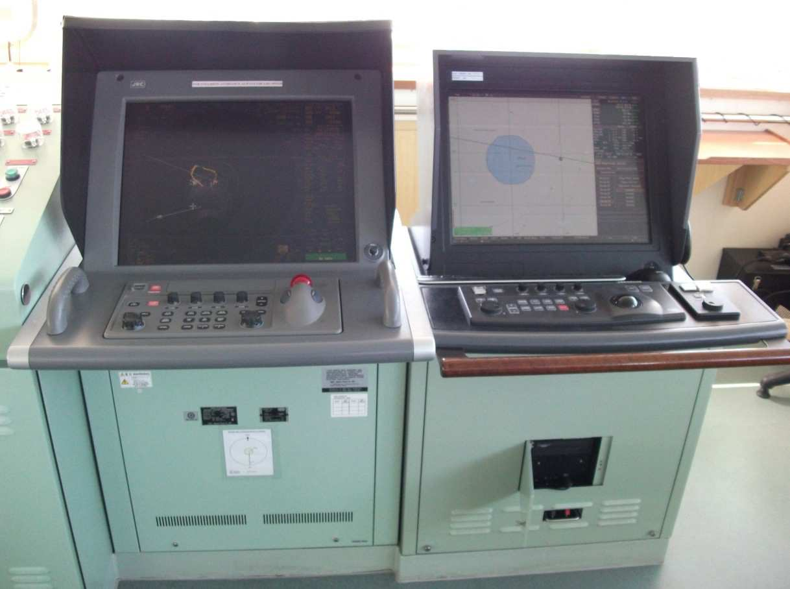
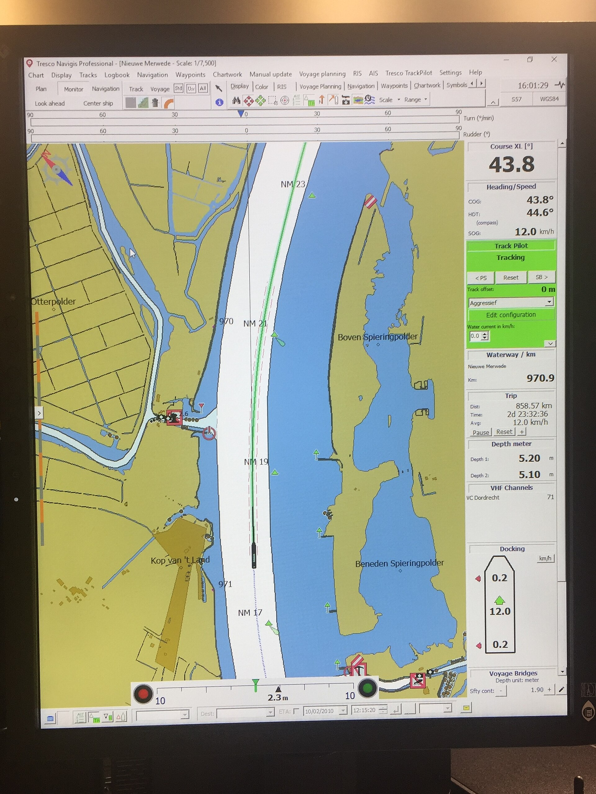

Konsept I yalnızca İDO marka görsellerine dayanmıyor. Aşağıdakiler Wikimedia Commons’tan
gerçek ECDIS / köprü konsolu fotoğrafları ve açık deniz visual channel görselleridir.
Sistem dili: Kongsberg K-Sim, Wärtsilä NTPRO 7 RealSea, OpenBridge, Furuno/Navi-Sailor ECDIS.

ECDIS — DEV AratereWikimedia · gerçek köprü ECDIS ekranı

Radar + ECDIS konsoluCap San Diego köprü enstrümanları

Sichem OspreyRadar ve ECDIS yan yana

Inland ECDIS chartTresco Navigis elektronik harita